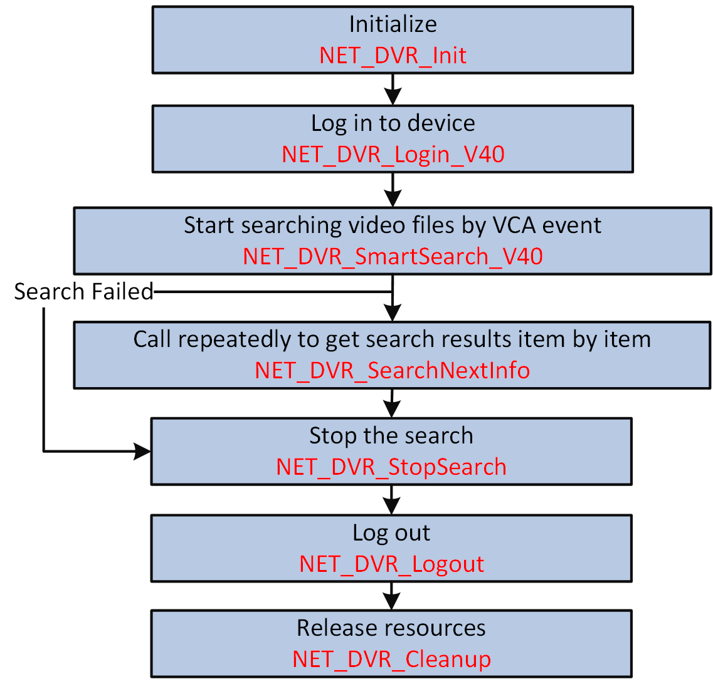

You can set VCA rule to the video files and find the video that VCA event occurs, including motion, intrusion, and line crossing. This function helps to search out the video that you may be more concerned.
Make sure you have set VCA rules and recording schedule, and set the linkage action of alarm or event to "recording".
Make sure you have called NET_DVR_Init to initialize the development environment.
Make sure you have called NET_DVR_Login_V40 to log in to the device.

Figure 1 Programming Flow of Searching Video Files by VCA EventCall NET_DVR_Logout and NET_DVR_Cleanup to log out and release resources.